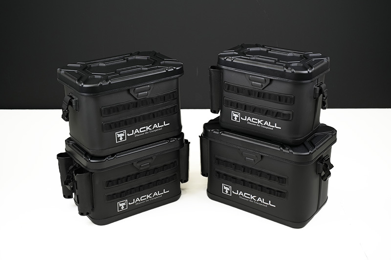
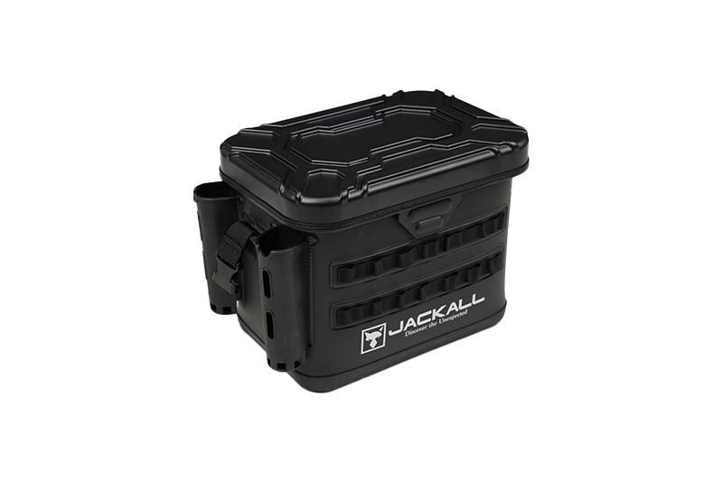
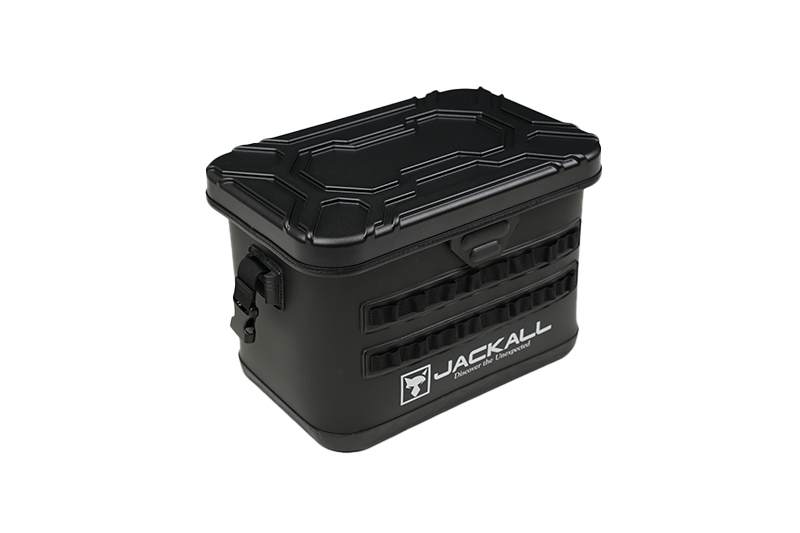
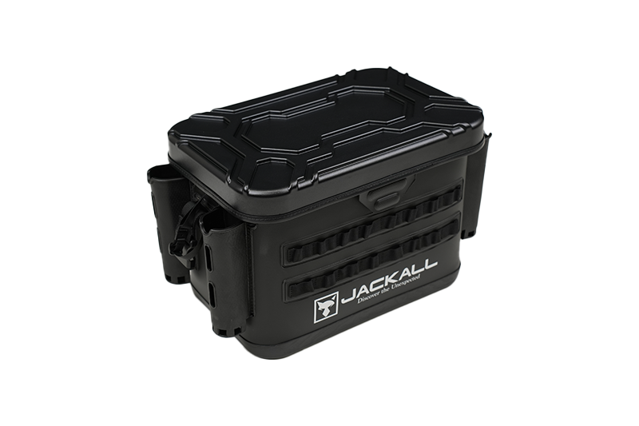
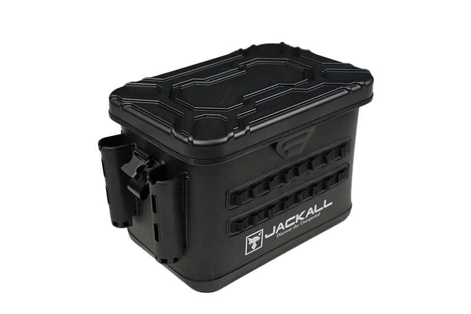
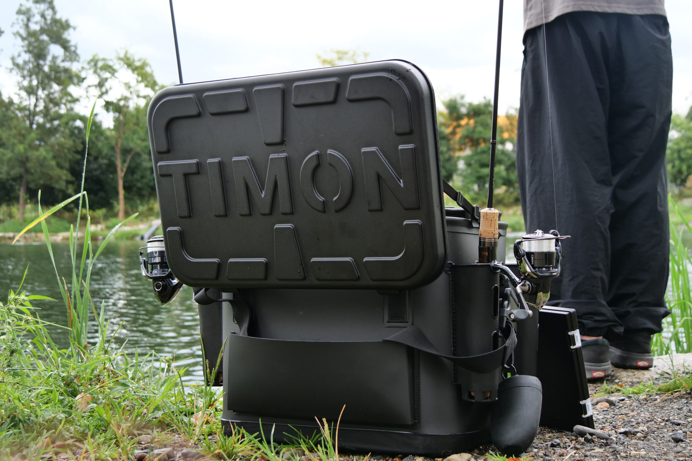

HDタックルコンテナ
（HD TACKLE CONTAINER）
HDタックルコンテナ（TT-C001）はJACKALL（ジャッカル）のタックルコンテナです。
「タフに使える。さらに使える。」をコンセプトに、本体構造や蓋、ショルダーベルト接続部など各部の強度を見直したハードユース対応モデル。新形状ロッドホルダーや蓋裏メッシュポケット、フロントのモールシステムなど、フィールドで“使う”ための機能も充実しています。

画像出典:ジャッカル公式HP
スペック
- メーカー
- JACKALL（ジャッカル）
- タイプ
- タックルコンテナ（品番 TT-C001）
- サイズ
- S／M（ロッドホルダー無し）／M／L
- 本体寸法
- S：D240×W340×H300mm
M：D245×W400×H310mm
L：D300×W500×H330mm - ロッドホルダー
- S：2／M（無し）：0／M：4／L：2
- インナートレー
- S・Lに付属
- 上蓋
- ベルクロ開閉（ポリカーボネート製）
- 価格
- S 17,600円／M（無し）18,480円／M 19,250円／L 19,800円（税込）
▼今すぐチェック


HDタックルコンテナの特徴
強くなっただけじゃない、フィールドで“使う”ためのタックルコンテナ
-
荷物を積んでも型崩れしにくい高強度ボディ
本体全体の構造を見直し、耐荷重性を向上。上にタックルケースや荷物を重ねてもへたりにくく、フィールドや車載時など、さまざまな場面で安定して使えます。蓋も強度に優れたポリカーボネート製です。
-
用途に合わせて変えられる新形状ロッドホルダー
通常は底のあるホルダーとして使えて、底面をハサミなどでカットすれば貫通仕様に変更可能。グリップエンドの長いロッドやランディングネットも深く差し込めます（カット後は元に戻せません）。
-
蓋裏メッシュポケットとモールシステム
蓋の裏には、よく使う小物をすぐ取り出せるメッシュポケット。フロントにはモールシステムを採用し、ポーチやツールホルダーなどを取り付けて自分好みにカスタマイズできます。蓋を途中で止めるストッパーコードや、強度を高めたバックル接続式ショルダーベルトも装備しています。
HDタックルコンテナの使い方
ルアーケースやライン、小物類をまとめて入れて持ち運び、釣り場ではロッドスタンドと道具置き場を兼ねて使うのが基本。蓋はベルクロ開閉で素早く開けられ、ストッパーコードで開きすぎも防げます。
別売りの「タックルポーチR」を組み合わせると、各サイズに4基ずつ収まり、用途ごとにタックルを整理できます。
HDタックルコンテナの向いている釣り
オカッパリでのランガン、レンタルボートやオフショアでの釣行、車載でのタックル整理まで。上に荷物を重ねることが多い人や、これまでのタックルコンテナがへたってしまった人に向いています。
ワンポイント
Lサイズのみ、ショルダー部の材質が海水対応。オフショアのソルトゲームや、潮をかぶりやすい場所で使うならLサイズを選ぶと安心です。
サイズの選び方
| サイズ | 本体寸法 | 向いている釣り |
|---|---|---|
| S | D240×W340×H300mm | 岸からのライトゲームやエリアトラウトに。内部トレイ付きで小物の整理も簡単 |
| M（ロッドホルダー無し） | D245×W400×H310mm | レンタルボートや、車・自宅でのタックル整理に。左右に干渉しにくい |
| M | D245×W400×H310mm | ロッドホルダー4本。バス、エリアトラウト、ソルトのショアゲームまでこなす汎用モデル |
| L | D300×W500×H330mm | オフショアやバスのビッグベイトゲームに。レインウェアやライフジャケットも入る大容量 |
迷ったら、ロッドホルダー付きのMサイズが基準。ライトゲーム中心ならS、オフショアや遠征、荷物の多い釣りならLがおすすめです。Mサイズの2モデルにはトレイが付かない点に注意しましょう。
サイズ別ラインナップ
4つのサイズをそれぞれ紹介します。

Sサイズロッドホルダー2本。ライトゲームやエリアトラウトにちょうどいいコンパクトモデル。

Mサイズ（ロッドホルダー無し）すっきりしたシルエット。場所が限られるボートや、タックルの整理用に。

Mサイズ両サイドに2本ずつ、計4本のロッドホルダー。オカッパリのランガンの定番サイズ。

Lサイズショルダー部が海水対応の大容量モデル。オフショアや遠征に。
画像出典:ジャッカル公式HP
HDタックルコンテナとあわせて使いたいアイテム
あわせて使いたいアイテム
HDタックルコンテナと組み合わせると便利なジャッカルのアイテムです。
-
タックルポーチR ジャッカル
各サイズに4基ずつ収まる専用ポーチ。ルアーや小物を用途ごとに分けて入れておけます。
-

TIMONタックルコンテナ（TT-C003） ジャッカルエリアトラウト専用設計のタックルコンテナ。マグネット開閉のトップカバーと全面深型トレイ付き。